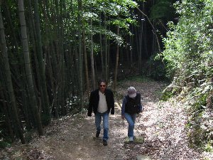
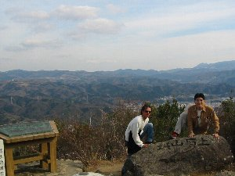
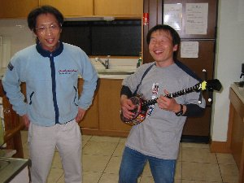

花いっぱい温泉 | ２００４年２月 |
|---|---|
| ＜べっしー＞ 伊豆の熱川の貸別荘で宴会！ この企画に、たすまんずメンバー１０名（子供含む）が賛同し、各々伊豆へと向かいました。 現地に16時集合だったので、その前にハイキングでもやろうと、いずみさん珍くん、私（べっしー）は静岡を朝９時に出発。沼津ＩＣが激混みでＩＣ降りたときに１２時廻っていたと思う。 それからひたすら裏道を通り、（そこでも渋滞したのだが）途中で昼食を取り、城山へ向かう。 ネットで調べたところ、此処は１時間ぐらいで登れると有ったので、手軽で良いかと思ったが、場所も調べずに行ったら、当然分からず、あきらめ掛けたところで看板発見！ 城山はクライマーにとってもメジャーな場所らしい。看板にもハイキングコースとクライミングコースが書かれている。途中、岩壁をよじ登っているクライマーが小さく見えた。 城山自体は、４０分かからず登れたのでは無いだろうか。山頂は展望が開け、富士山まで眺めることが出来た。時間が差し迫ってきたので、早々に下山。 途中でじゅんじゅんと合流し、一路熱川へ。時期的に川津桜の時期であり、途中で鬼混み！ 到着時間が大幅に遅れ１８時になってしまった。先に到着していた他メンバーはすでにカラオケをしていた。 | |
|  城山へのハイキングコース |  城山山頂より |
| ＜しゅがー＞ まさか伊豆に私の車で追走するとはユメユメ思ってませんでした（前日の飲み会の大騒ぎが聞いたらしい。もちろんカラオケでね♪）。 朝の目覚ましは携帯のベル！どうやら一回目と思って出たのが２回目だったらしく、ＩＺＵ姉さんでした。カラオケ翌日ですので声がガラガラ。ビビリまくった後、自分の車で追走することに決めました。 泊り込みの準備と家事洗濯を済ませ、午後一に実家を飛び出す。昼飯も高速走行中に食し。（取り付かれたような走りかただったかも。当然休みなし）、 沼津ＩＣは大混みだったので裾野ＩＣへ。芦ノ湖スカイラインへ抜ける、幅が２ｍの林道を通り過ぎるが近道と考えました。 皆さん！芦ノ湖スカイラインは芦ノ湖を上部から一望できますよ！！芦ノ湖の湖の青さと鳥居の赤さ、船の白さに感動（写真撮ればよかったな〜）。 次に伊豆スカイラインを楽しみました。こちらは駿河湾と東伊豆側の海を一望できます。眼下には集落郡が広がります。 玄岳ドライブインは一度よってみる価値あり。何が価値かは自分で確認してね。 命の泉（だったか覚えてない）の付近では先の道が見渡せる（涙！涙！）。 私は、周りに何も無い道、を見るのが実は大好きなのです（爆）。 | |
 宴会中！三線に没頭。コップ見えます？！ |  盛り上がり中！昔を思い出し・・・・・？ |
| ＜べっしー＞ 貸別荘は想像より広く綺麗だった。昼間はデイサービス等に使われている建物は、２階建てで全館バリアフリー。多目的トイレ、エレベーターも装備。そして専用の露天風呂！感動するばかり！（この露天風呂サイコーです） 夕食は出前で定食と舟盛りを注文。酒を買ってきて宴は始まった。 シュガーが持参した三線が好評で、皆試し弾きをしたり、昔を思い出し浸りながら弾く人も・・・ 宴会の途中で私は一人露天風呂に入っていた。この風呂もスロープが付いていて車いすの人も入れるようになっている。（この露天風呂は昼間は一般客に解放されている） 広い風呂の中で夜空を見上げると、星が瞬いていた。素晴らしい時間だ。が、横の窓からはカラオケの音が・・・・ 結局宴は午前３時まで一部の人が続けていた。（かく言う私もその一人） 翌日は雨。雨の中でも露天に浸かる。 その変に有るもので朝食を済ませ、熱海梅園に向かう。熱海梅園には昼頃到着。梅は既に満開時を過ぎている様子だったが、それなりに楽しめた。 | |
 カラオケ風景。なんか弾いている人も・・・ |  宿付属の露天風呂 |
| ＜シュガー＞ 花一杯温泉大人気でしたね！まさか集合場所に宿泊できるとは、これまたびっくりでした。 乾杯何回したかな？夕食は出前もの。好きなものを頼みました。牡蠣フライ最高でしたよ！（ほかはどうだった？）（俺のエビフライもデカくて美味かった。ｂｙ べっしー） 三線持参！皆さんに喜んでもらえてよかったです。「チューリップ」や「花」を弾いたが、チューニングがまるでだめ。 しかしそれでも弾き語るＲＹＵＵさんもすごい！。チューニングＴＨＡＮＫＳ（ＩＺＵ姉、キッカー）。 私は昨日に引き続きカラオケに没頭する‥。いわんやカラオケ人生！ 10数年の蓄積はこれで全部でないよ。 隠し玉はまだありますので、今後に期待してください（マニアかも）。 正直、カラオケ終わって寝る直前は、記憶薄いです（爆）。 翌日は９時まで寝ていた私。朝風呂（洞窟風呂‥かなぁ）に浸かり、酒を抜く。（宿泊中は隣の日帰り風呂にも入れます） 風呂場の主人は気さくな方です。「最近の若いもんは背が高いね」「人が多いと冷凍庫がみれない」「このポットは私専用」とか‥話してました。 天気は雨。帰還中の伊豆スカイラインはガス出まくり。風景みれず残念。 熱海梅園は広かったですね。さらに入場料はタダ！滝の下をくぐるわ、まだ建造中の庭もみれ‥なかったけど。 感動の薄い（こだわり派の）私でも、良いかな、と思いました。 マーシー一家とはここでお別れ。でも家族でちょっとした旅をしたことは良いことでしょう（物より思い出さ！）。 | |
 熱海梅園にて |  梅園内の土産物屋で試食 |
| コメント／べっしー＆シュガー、 写真／べっしー | |